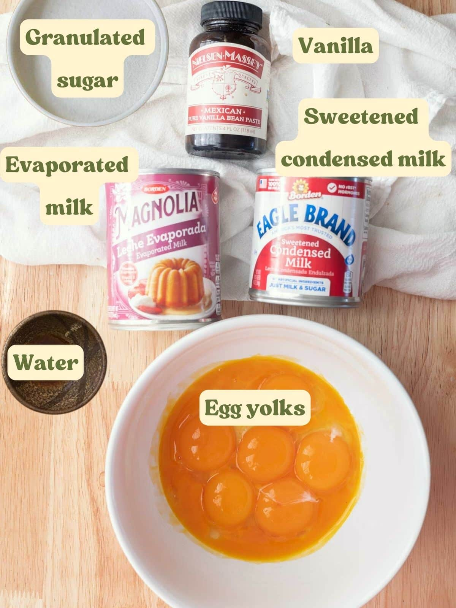
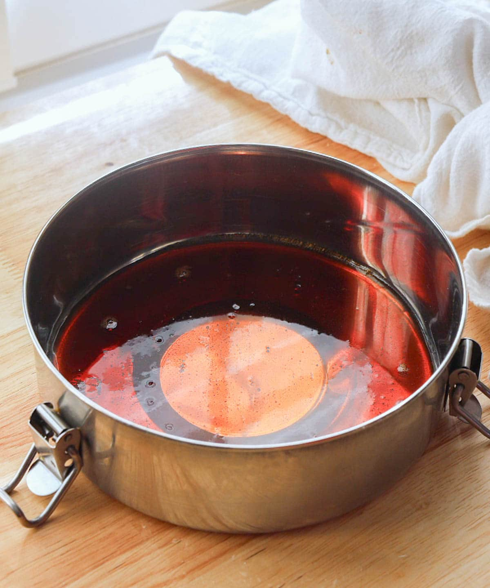
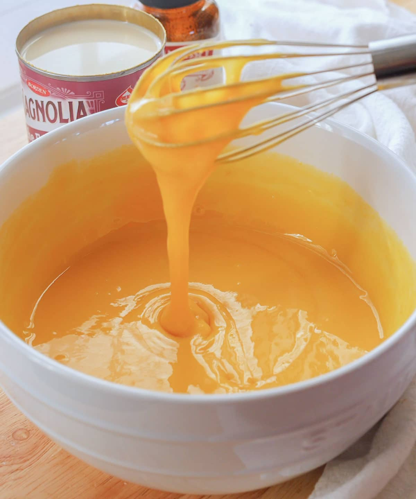
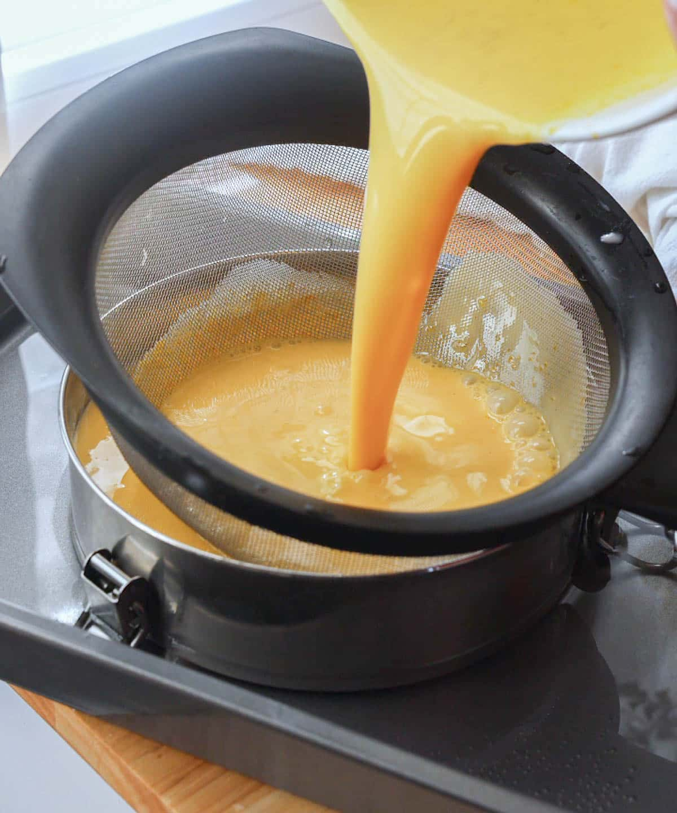
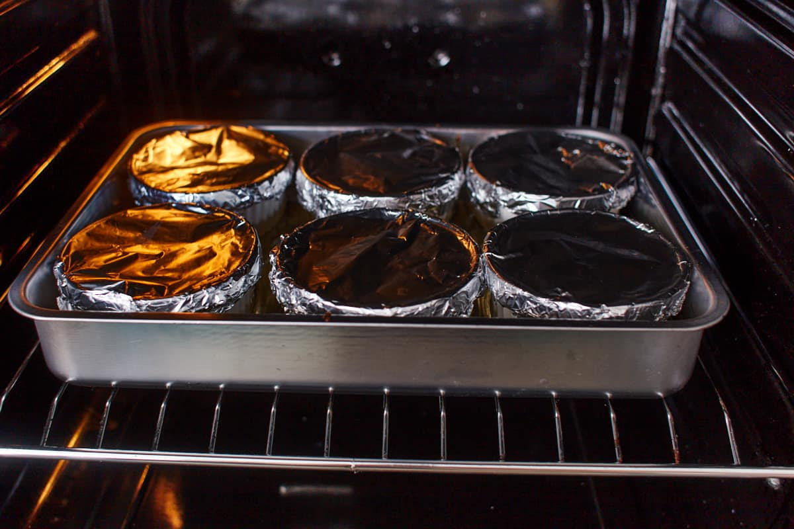
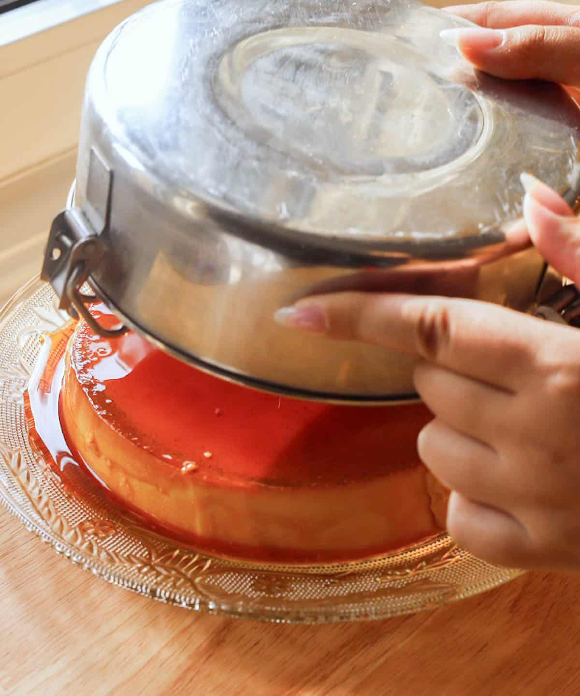
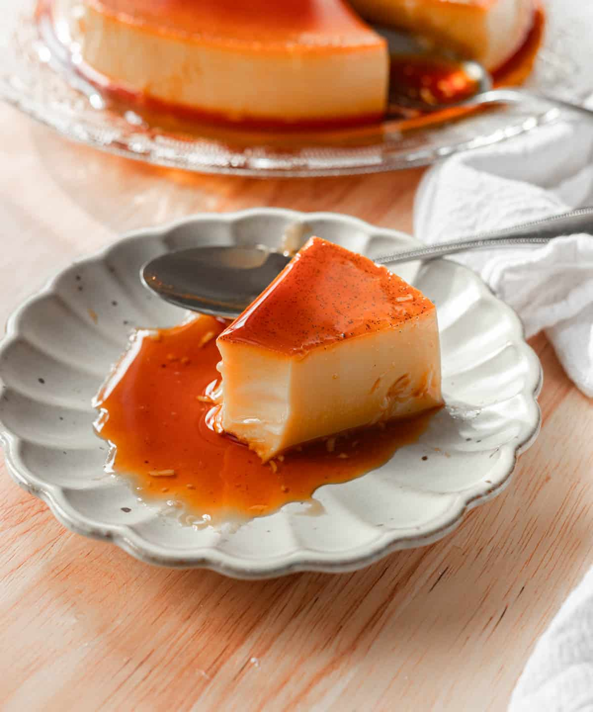

Step 1: Gather Ingredients
This recipe requires a few simple ingredients, but the results are truly decadent. Before we begin, let's gather everything we need to create this smooth, creamy, and caramel-topped delight. Prepare these ingredients:
-
1 cup
Granulated Sugar
-
15
Egg yolks
-
320 ml
Sweetened Condensed Milk
-
250 ml
Evaporated Milk
-
As needed
Water
-
1 tsp
Vanilla extract

Step 2: Make Caramel
In a saucepan, add granulated sugar and water. Cook on medium low until you get a light golden caramel, about 5 minutes (mine is a bit darker because I like the burnt caramel flavor haha!). Immediately pour into llanera/baking mold, making sure to evenly coat the bottom. The caramel will harden within the next few minutes.

Step 3: Mix Ingredients
In a mixing bowl, whisk together the eggs, condensed milk, evaporated milk, and vanilla extract until the mixture is smooth and well-combined. Make sure there are no lumps to ensure a creamy flan texture.

Step 4: Pour Mixture into Baking Dish
Carefully pour the flan mixture through a fine sieve into the llanera. This will help remove any egg streaks, ensuring a velvety smooth texture. Lightly cover the llanera with a lid (but don’t lock it) or use aluminum foil. This will help steam the flan gently, making it smooth and creamy.

Step 5: Bake the Leche Flan
Bake flan in a water bath at 350°F/177°C for about 40-60 minutes, depending on the size of your llanera. I recommend checking it at the 30-minute mark. To make sure it is done, it must pass these 3 tests:
- The top should be set but still jiggle
- When touched with a finger, it shouldn’t stick
- A toothpick inserted in the middle should come out clean

Step 6: Let it Cool Down
Allow the flan to cool uncovered at room temperature for 30 to 45 minutes. Once it’s slightly cooled, cover the llanera and place it in the fridge. Chill for at least 3 hours, or until the flan has fully set and is firm to the touch. To loosen the edges, gently run an offset spatula around the sides before serving.

Step 7: Serve & Enjoy!
Place a rimmed plate on top of the llanera to catch any delicious caramel that may spill. Carefully flip the llanera upside down and tap it gently. Give it a slight shake to release the flan onto the plate. Serve and enjoy this indulgent, smooth treat!